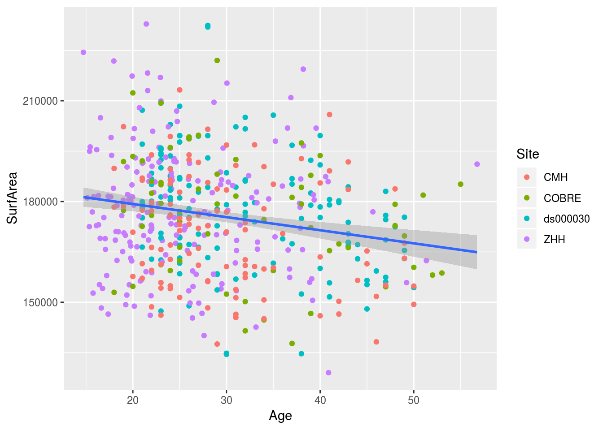

Chapter 3 Check completion and add MR QA
This section of the code checks to make sure that we have preprocessed data available for all expected partcipants.
Then, for participants with more than one run/session of bold data it picks the best run per participant for the next analysis
The final output is the QAed phenotypic file is data/phenotypic/20200202_pheno_qapass.csv which is the input for all of the rest of the analyses.
library(tidyverse)## ── Attaching packages ──────────────────────────────────────────────────────────────────────────────────────────────────────────────────── tidyverse 1.2.1 ──## ✔ ggplot2 3.1.0 ✔ purrr 0.2.5
## ✔ tibble 2.0.1 ✔ dplyr 0.8.0.1
## ✔ tidyr 0.8.2 ✔ stringr 1.3.1
## ✔ readr 1.3.0 ✔ forcats 0.3.0## ── Conflicts ─────────────────────────────────────────────────────────────────────────────────────────────────────────────────────── tidyverse_conflicts() ──
## ✖ dplyr::filter() masks stats::filter()
## ✖ dplyr::lag() masks stats::lag()library(here)## here() starts at /mnt/tigrlab/projects/edickie/code/SZ_PINTprocessed_mri_dir <- here("data/processed/mri/")3.1 Get a list of available bold and T1w files (from the mriqc outputs)
sub_projects = c("ZHH", "COBRE", "ASDD", "ASDD", "DTI3T" , "RTMSWM", "PNSC", "SPINS", "ds000030_R1.0.5")
read_mriqc_bold <- function(studyname) {
bold <- read_csv(str_c(processed_mri_dir, studyname, "/out/mriqc/bold.csv")) %>%
mutate(subject_id = as.character(subject_id))
if ("session_id" %in% names(bold)) {
bold <- bold %>% mutate(session_id = as.character(session_id))
}
return(bold)
}
all_the_bolds <- tibble(dataset = sub_projects) %>%
mutate(boldqc = map(dataset, function(x) {
read_mriqc_bold(x)
})) %>%
unnest() %>%
filter(task_id == "rest") bolds_condensed <- all_the_bolds %>%
select(dataset, ends_with('_id'), starts_with('fd_'), starts_with('size'), starts_with('spacing')) %>%
mutate(subject = str_c("sub-", subject_id),
session = str_c("ses-",session_id)) read_mriqc_t1w <- function(studyname) {
bold <- read_csv(str_c(processed_mri_dir, studyname, "/out/mriqc/T1w.csv")) %>%
mutate(subject_id = as.character(subject_id))
if ("session_id" %in% names(bold)) {
bold <- bold %>% mutate(session_id = as.character(session_id))
}
return(bold)
}
all_the_T1w <- tibble(dataset = sub_projects) %>%
mutate(t1wqc = map(dataset, function(x) {
read_mriqc_t1w(x)
})) %>%
unnest() %>%
group_by(dataset, subject_id) %>%
summarise(num_t1w = n())3.1.1 the list of usable scans is all participants with both T1w and bold data
usable_scans <- all_the_bolds %>%
group_by(dataset, subject_id, task_id) %>%
summarise(num_rest = n()) %>%
full_join(all_the_T1w, by = c("subject_id", "dataset")) %>%
mutate(num_scans = num_rest + num_t1w,
subject = str_c("sub-", subject_id)) %>%
ungroup()usable_scans %>%
ungroup() %>%
select(subject_id, dataset, num_scans) %>%
drop_na(num_scans) %>%
distinct() %>%
count()## # A tibble: 1 x 1
## n
## <int>
## 1 7043.2 now glob for all of the PINT outputs
pint_summarys_wses <- Sys.glob(str_c(processed_mri_dir, "/*/out/ciftify_PINT/sub*/ses*/*summary.csv"))
pint_summarys_nses <- Sys.glob(str_c(processed_mri_dir, "/*/out/ciftify_PINT/sub*/*summary.csv"))
pintdf_nses <- tibble(filepath = pint_summarys_nses) %>%
transmute(filepath = str_remove(filepath, processed_mri_dir)) %>%
separate(filepath,
into = c("1",'dataset','4','5','subject', 'filename'),
sep = .Platform$file.sep) %>%
select(dataset, subject, filename)
pintdf_wses <- tibble(filepath = pint_summarys_wses) %>%
transmute(filepath = str_remove(filepath, processed_mri_dir)) %>%
separate(filepath,
into = c("1", 'dataset','4','5','subject', 'session', 'filename'),
sep = .Platform$file.sep) %>%
select(dataset, subject, session, filename)
pintdf <- bind_rows(pintdf_wses, pintdf_nses)
rm(pint_summarys_nses, pint_summarys_wses, pintdf_nses, pintdf_wses)3.3 read in the combined demographics from the last chapter
# removing session id column because it is redundant
simple_pheno <- read_csv(here('data/processed/pheno/simple_pheno_20200202.csv')) ## Parsed with column specification:
## cols(
## subject = col_character(),
## cmh_session_id = col_character(),
## DX = col_character(),
## Age = col_double(),
## Sex = col_character(),
## dataset = col_character(),
## Site = col_character(),
## Scanner = col_character(),
## GRID = col_double(),
## zhh_session_id = col_double(),
## MRI_Date = col_double(),
## Edu = col_double(),
## isFEP = col_character(),
## ghost_NoGhost = col_character()
## )3.4 also read in an concatenate all the surface area info from freesurfer
all_surfs <- tibble(dataset = sub_projects) %>%
mutate(data = map(dataset, ~read_csv(str_c(processed_mri_dir,.x,
'/out/freesurfer/CorticalMeasuresENIGMA_SurfAvg.csv'),
col_types = cols(
.default = col_double(),
SubjID = col_character())))) %>%
unnest() %>%
select(dataset, SubjID, LSurfArea, RSurfArea) %>%
mutate(SurfArea = LSurfArea + RSurfArea)3.5 anti-join the pheno data with the usable scan data to see if we have everything..
usable_scans %>%
anti_join(simple_pheno, by = c("subject", "dataset")) %>%
drop_na(num_scans)## # A tibble: 1 x 7
## dataset subject_id task_id num_rest num_t1w num_scans subject
## <chr> <chr> <chr> <int> <int> <int> <chr>
## 1 SPINS CMHAA2102 rest 1 1 2 sub-CMHAA21023.5.0.1 we see that the only people we have bold info but no phenotype for is that one VIPR participant in SPINS and the 5 people from ds00030 who don’t have a T1w scan
3.6 Setting the motion threshold:
We have set the motion threshold to: Mean FD < 0.5mm and No more than 50% of the scan with motion > 0.2mm
mean_fd_thres <- 0.5
perc_fd_thres <- 50
pre_qa <- bolds_condensed %>%
inner_join(select(usable_scans, -task_id, -subject_id),
by = c("subject", "dataset")) %>%
drop_na(num_scans) %>%
inner_join(simple_pheno, by = c("subject", "dataset")) %>%
inner_join(all_surfs %>% rename(subject = SubjID), by = c("subject", "dataset"))pre_qa_counts <- pre_qa %>%
select(subject, dataset, DX) %>%
distinct() %>%
count(DX)
qa_passes_pheno <- pre_qa %>%
filter(fd_mean < 0.5, fd_perc < 50, size_t > 100)
qa_passes_pheno %>%
select(subject, dataset, DX) %>%
distinct() %>%
count(DX) %>%
inner_join(pre_qa_counts, by = "DX", suffix = c("_after_qa", "_before_qa"))## # A tibble: 3 x 3
## DX n_after_qa n_before_qa
## <chr> <int> <int>
## 1 <NA> 2 9
## 2 CTRL 294 377
## 3 SSD 203 3173.7 who is still missing a PINT output?
anti_join(qa_passes_pheno, pintdf,
by = c("dataset", "subject", "session")) ## # A tibble: 0 x 37
## # … with 37 variables: dataset <chr>, subject_id <chr>, session_id <chr>,
## # task_id <chr>, run_id <chr>, acq_id <chr>, fd_mean <dbl>,
## # fd_num <dbl>, fd_perc <dbl>, size_t <dbl>, size_x <dbl>, size_y <dbl>,
## # size_z <dbl>, spacing_tr <dbl>, spacing_x <dbl>, spacing_y <dbl>,
## # spacing_z <dbl>, subject <chr>, session <chr>, num_rest <int>,
## # num_t1w <int>, num_scans <int>, cmh_session_id <chr>, DX <chr>,
## # Age <dbl>, Sex <chr>, Site <chr>, Scanner <chr>, GRID <dbl>,
## # zhh_session_id <dbl>, MRI_Date <dbl>, Edu <dbl>, isFEP <chr>,
## # ghost_NoGhost <chr>, LSurfArea <dbl>, RSurfArea <dbl>, SurfArea <dbl>3.8 Selecting scans with least motion
# select the scan for each participant with the least motion
pheno <- qa_passes_pheno %>%
select(-ends_with("_x"), -ends_with("_y")) %>%
left_join(pintdf,
by = c("dataset", "subject", "session")) %>%
filter(!is.na(filename)) %>%
group_by(subject, dataset) %>%
arrange(fd_perc) %>%
slice(1) %>%
ungroup() pheno %>%
ggplot(aes(x = Age, y = SurfArea)) +
geom_point(aes(color = Site)) + geom_smooth(method = "lm") 
3.9 final mangle of the phenotypic data (transforming variables)
transform_to_normal <- function(X) {
# calculate the best exponent using powerTransform:
pT <- car::powerTransform(X)
# apply the power transform and save the result to a new variable
X_pT <- X^pT$lambda ## note ^ is exponent in r
xout = scales::rescale(X_pT)
return(X_pT)
}
# transform age and fd_mean to normality
pheno <- pheno %>%
mutate(Age_pt = transform_to_normal(Age),
fd_mean_pt = transform_to_normal(fd_mean),
SurfArea_pt = transform_to_normal(SurfArea))pheno %>%
select(subject, dataset, DX) %>%
distinct() %>%
count(DX) %>%
inner_join(pre_qa_counts, by = "DX", suffix = c("_after_qa", "_before_qa"))## # A tibble: 3 x 3
## DX n_after_qa n_before_qa
## <chr> <int> <int>
## 1 <NA> 2 9
## 2 CTRL 294 377
## 3 SSD 203 317pheno %>%
group_by(Site, DX) %>%
summarise(n = n(),
nMale = sum(Sex == "M"),
perc_male = nMale/n()*100,
age_mean = mean(Age, na.rm = T),
age_sd = sd(Age, na.rm = T),
age_min = min(Age, na.rm = T),
age_max = max(Age, na.rm = T)) %>%
mutate(age_report =sprintf("%0.1f(%0.1f) %0.0f - %0.0f",
age_mean, age_sd, age_min, age_max),
sex_report = str_c(nMale, '(', sprintf("%0.1f", perc_male), '%)')) %>%
select(Site, DX, n, age_report, sex_report)## # A tibble: 9 x 5
## # Groups: Site [4]
## Site DX n age_report sex_report
## <chr> <chr> <int> <chr> <chr>
## 1 CMH CTRL 41 26.4(6.7) 18 - 49 22(53.7%)
## 2 CMH SSD 67 32.2(8.5) 18 - 50 40(59.7%)
## 3 COBRE <NA> 2 40.0(2.8) 38 - 42 1(50.0%)
## 4 COBRE CTRL 35 33.2(9.0) 18 - 51 23(65.7%)
## 5 COBRE SSD 22 29.5(12.1) 19 - 55 19(86.4%)
## 6 ds000030 CTRL 107 30.4(8.1) 21 - 50 55(51.4%)
## 7 ds000030 SSD 31 35.2(9.3) 22 - 49 24(77.4%)
## 8 ZHH CTRL 111 25.1(6.6) 15 - 41 48(43.2%)
## 9 ZHH SSD 83 25.8(9.0) 15 - 57 63(75.9%)qa_passes_pheno %>%
mutate(scan_length = size_t*2/60,
spacing_x_round = round(spacing_x, 3),
spacing_z_round = round(spacing_z,3)) %>%
group_by(subject) %>%
sample_n(1) %>%
ungroup() %>%
group_by(Site, size_t, size_x, size_y, size_z, spacing_x_round, spacing_z_round, scan_length) %>%
count() %>%
ungroup() %>%
group_by(Site) %>%
arrange(-n) %>%
slice(1) %>%
t()## [,1] [,2] [,3] [,4]
## Site "CMH" "COBRE" "ds000030" "ZHH"
## size_t "208" "149" "152" "148"
## size_x "64" "64" "64" "64"
## size_y "64" "64" "64" "64"
## size_z "40" "33" "34" "40"
## spacing_x_round "3.125" "3.750" "3.000" "3.750"
## spacing_z_round "4.00" "4.55" "4.00" "3.00"
## scan_length "6.933333" "4.966667" "5.066667" "4.933333"
## n " 98" " 36" "124" "148"write_csv(pheno, here('data/processed/pheno/20200202_pheno_qapass.csv'))pheno %>%
filter(!is.na(DX)) %>%
count(Site, DX) ## # A tibble: 8 x 3
## Site DX n
## <chr> <chr> <int>
## 1 CMH CTRL 41
## 2 CMH SSD 67
## 3 COBRE CTRL 35
## 4 COBRE SSD 22
## 5 ds000030 CTRL 107
## 6 ds000030 SSD 31
## 7 ZHH CTRL 111
## 8 ZHH SSD 83- ASDD is done!
- ZHH is done! (note that the TR for scans without a TR was set to 2s by Saba and Dayton)
- RTMSWM is done!
- PNSC is done
- DTI3T is done!
- SPINS has one extra bold (CMHAA2102 - from VIPR - disregard)
- COBRE is done (enough) - but half of it never downloaded
- ds00030 5 subjects need to rerun ciftify..